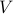
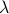
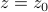
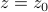
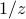

What's on my mind? March 2019
What's going on in the curious canteloupe of my head? Lots of bizarre things pass through my mind, and I thought it'd be fruitful to document the sorts of topics I'm thinking about. This week, the theme is trajectories in high-dimensional spaces…and a little taste of complex anlysis and Fourier Transforms as well.
Statistical Mechanics and Ergodicity
Here's a question that's been nagging at me for years. When we do statistical mechanics, we take averages over phase space , but in reality, Nature performs averages over time, . So why the hell do the time averages we observe have anything to do with the abstract ensemble averages that we compute in statistical mechanics?
Furthermore, if we think about an ensemble as a probability distribution over phase space, then the laws of time evolution do a terrible job of sampling from this probability distribution! In particular, in a system of  particles, the phase space is -dimensional (3 position coordinates, 3 momentum coordinates per particle). And thus this probability distribution is defined over a volume of , a ridiculously huge number. On the other hand, the number of states sampled by a time trajectory is only of order
particles, the phase space is -dimensional (3 position coordinates, 3 momentum coordinates per particle). And thus this probability distribution is defined over a volume of , a ridiculously huge number. On the other hand, the number of states sampled by a time trajectory is only of order  . So it's all the more puzzling why ensemble averages have anything to do with physical observables at all.
. So it's all the more puzzling why ensemble averages have anything to do with physical observables at all.
This week, I started rereading Shang-keng Ma's statistical mechanics book. He has a careful and unorthodox viewpoint towards our understanding of statistical mechanics that centers on the key difference between abstract ensemble averages and physical time averages. In particular, he stresses that the concept of equilibrium necessarily involves a timescale of observation over which macroscopic properties don't change.
For instance, he spends a whole chapter discussing impurities in a material,such as solutes dissolved in a (liquid) solution, or weird impurities inside the crystal lattice. Depending on the timescale of diffusion for these impurities, the thermodynamics of such systems are completely different. In one extreme, the mobile impurities thoroughly traverse the entire system during the observation timescale, so when we compute thermodynamic quantities, the relevant volume is  per particle, and we have to include a factor of to account for indistinguishability. In the other extreme, the impurities are ‘‘trapped’’ and don't move around much during the observation timescale, so now the volume per impurity atom is , and since they can't switch places, we don't need to introduce the factor.
Life is easiest when we can assume details happen fast enough to be in equilibrium, or slow enough to be static and unchanging. In the intermediate regime (glasses), it's much harder to think about what equilibrium means.
Incidentally, the difference in timescale results in the differing entropies of the solid and liquid states! In solids, atoms are locked in place; in liquids, they can move around and change places.
Philosophically, the above argument is pretty compelling evidence for why we must always take into account the observation timescale when discussing equilibrium. If we don't wait long enough for the impurities to diffuse and exchange locations, then the system explores far fewer configurations, and thus the entropy is far less.
The first time I read through this book, a lot of the chapters didn't make much sense. But now, with a bit more statistical mechanical sophistication under my belt, I think this book is becoming far more rewarding to read and understand. Hopefully it will give me some satisfactory answers about this question of ergodicity.
Chaos theory
Often, people justify the ergodic assumption by appealing to chaos theory. So I checked out a book called ‘‘Chaos and Coarse Graining in Statistical Mechanics’’ from the library, and I'm skimming through to see whether I'm convinced by these arguments. I didn't read the book too carefully, because I don't think it's worth my time to understand all the details. But here were some key takeaways I got:
Dynamical systems trace out some sort of trajectory in ‘‘phase space’’ as they evolve.
If you start off in a basin of attraction, then you approach limit cycles or fixed points as .
Often such strange attractors are fractals and have weird dimensions. Something something about chaos.
The nicest probability measure over phase space to pick is one that's invariant under time evolution. In the context of classical mechanics, this is our typical phase space variables , or any other set of variables related to these by a canonical transformation.
Say we have some blob in a region of phase space. As we undergo time evolution, this blob morphs and stretches around. If we measure volume using the nice invariant probability measure, then the volume doesn't change as we undergo time evolution. We say that phase space is incompressible.
Already, there's a seeming paradox between this fact and the ensemble view of entropy as the log volume of such a blob! If the volume of the blob doesn't get bigger, that means that this conventional definition of entropy doesn't increase with time.
There's some argument about how this blob of dough stretches out into thin filamentatious noodles and occupies a larger effective volume of phase space….and about how quantum mechanics coarse-grains the phase space into volumes of size (where
 is Planck's constant)…but I've never been very convinced by such arguments.
is Planck's constant)…but I've never been very convinced by such arguments.
Lyapunov exponents  measure how quickly neighboring trajectories diverge from each other.
These exponents are the eigenvalues of some matrix describing the divergence of neighboring paths, but as time approaches infinity, only the biggest eigenvalue matters.
Indeed, Lyapunov exponents only make sense in the assymptotic limit as , so we have to be careful about making claims in smaller timescales.
The KS entropy is another way to measure how complicated the trajectories of a chaotic system are. If we coarse-grain the phase space into little cells, and then describe the trajectory as a sequence of cells, then the KS entropy is related to the shannon entropy of this sort of sequence.
Under this interpretation, we can think of a dynamical system as generating bits of information per unit time.
Here's a way to understand Lyapunov exponents. Say that we know the current state of the system to within an accuracy of , and we want to extrapolate the trajectory into the future. Because of the chaotic behavior of such a system, a tiny difference between two initial points can lead to an exponentially diverging distance between them. Hence we can only trust our predicted trajectory for a certain amount of time , before our uncertainty in the initial state leads to complete ignorance. To be precise, if our maximum tolerable separation between trajectories is , then we can only trust our predictions to within a time
where is the Lyapunov exponent, is the initial separation between trajectories, is our maximum toleration between trajectories, and is the time range when we can trust our predictions.
The book went on to talk about the differences between deterministic chaotic systems and stochastic non-chaotic systems. In the former, the time evolution is completely determined by the initial conditions, but the smallest perturbation leads to a completely different trajectory. And in the latter, there's a genuine aspect of randomness to the trajectory, even if we repeat the experiment starting off at the same initial point.
In theory, you can distinguish these possibilities if you measure the trajectories for long enough, but you will need to take a ridiculous number of data points! There was a simple toy example in the book that required data points, for instance. Whoa.
A particularly philosophically pithy take-away point is that deterministic, chaotic systems look a lot like stochastic systems when you
observe data points with a finite resolution , and
only have a finite number of data points.
For instance, turbulence is a completely deterministic phenomenon – if you know the velocity field at some point in time, you can apply the time-evolution laws to figure out what it is at some later point. Yet you can model turbulence as a random process!
On the other hand, the pseudo-random number generators in our computers are exactly deterministic: they result in the same ‘‘random’’ numbers if you seed them they same way. Yet their outpus have the statistical properties of a random sequence!
Fourier modes and translational invariance
I've wanted to build a better intuition of the Fourier Transform for the longest time, and finally, it's all sort of coming together and making sense. In particular, on my thermodynamics problem set this week, we're solving the classic problem of a ‘‘mattress’’ of coupled harmonic oscillators. We're given a bunch of masses in a square d-dimensional grid, each of which has a spring attached to its nearest neighbors in the form of , and we want to find its thermodynamic properties.
The trick to solving this problem is to rewrite the energy in terms of normal modes. We've seen such an approach multiple times throughout our physics education – in finding the phonons of a crystal lattice, in solving general small-oscillation problems, in vibrating beer bottles, and more. But the interesting fact is that the modes which diagonalize this Hamiltonian turn out to be Fourier modes.
This Fourier approach seemed intuitive to me, but I don't know why. I'm struggling to remind myself of what examples I'm drawing an analogy to. Let me see…
When I had lunch with Scott on Tuesday, we were chatting about so-called ‘‘circulant matrices’’ – a silly sort of square matrix where each row has the same entries, except in each subsequet row, you slide down all the entries to the right. The eignevectors of these matrices are the Fourier basis!
Such circulant matrices correspond to translationally invariant systems, where the energy doesn't change under a translational shift of
 . I convinced myself of these facts by explicitly writing it out and checking the matrix entries in the Fourier basis.
. I convinced myself of these facts by explicitly writing it out and checking the matrix entries in the Fourier basis.Perhaps it has to do with Bloch's theorem in quantum mechanics? Here, we have the translational symmetry of a crystal lattice, and a plane-wave-esque form.
Or maybe the free-space solutions to the wave equation. Here the equation looks something like , and the second derivative term is analogous to the term in the Gaussian Model.
Anyways, I found it a bit annoying that I couldn't remember where exactly I was drawing my intuition from. I'm a strong believer that ‘‘gut instinct’’ is built up from seeing specific examples, so hopefully I can come up with some solid example to explain why Fourier modes diagonalize translationally invariant systems.
High-Dimensional Spaces
There's lots of counter-intuitive behaviors of high-dimensional spaces that come into play in all areas of science. As humans living in a measly three-dimensional world, we're forced to reason by analogy into spaces of higher dimension, but sometimes, the results of our intuition just don't hold true.
Some concrete examples of high-dimensional spaces include:
Say we're talking about a protein as an amino acid sequence of length
 . We can think of each letter of the sequence as a dimension, and then a particular sequence is a point in this -dimensional space. The number of such points in the space () is exponential in the number of dimensions! Volumes in high dimensions are just unimaginably huge.
. We can think of each letter of the sequence as a dimension, and then a particular sequence is a point in this -dimensional space. The number of such points in the space () is exponential in the number of dimensions! Volumes in high dimensions are just unimaginably huge.Say we wished to describe the motion of such a protein as it wiggles and jiggles around. Each of its
atoms will have 3 position coordinates and 3 momentum coordinates, for a total of coordinates. The configuration of the protein thus lives in an utterly huge -dimensional space.Say we're training a neural network. There's all sorts of weights and parameters that enter into the model; the biggest networks today have millions to billions of them. Each possible ‘‘configuration’’ of weights yields a different value for the loss function evaluated on your training data. Notice that the volume in parameter-space goes like something to the millionth power – a ridiculously huge number. One of the difficultines of training such networks probably has to do with the huge hypervolume of possibilities.
Properties of hyperspheres
To think about high-dimensional spaces a bit more, let's consider the geometric object of a hypersphere, the set of all points that are equidistant from the origin in a -dimensional space. Let's say that points in our space are described by coordinates , and that distance is measured by a typical L2 norm of . A hypersphere of radius is given by the set of all points that are a distance from the center; i.e., .
In Ma's statistical mechanics book, he discussed the non-intuitive properties of hyperspheres. For instance:
Most of the volume lies in a little shell right next to the surface! For instance, if compare a sphere of radius
 to a sphere of radius , we see that volumes differ by , and if is huge, this little shell has a huge volume.
to a sphere of radius , we see that volumes differ by , and if is huge, this little shell has a huge volume.You can move very far distances by changing the individual coordinates a little amount. For instance, if we started at the origin, and then only moved a distance
 in each of the dimensions, we'd end up at a distance away. And as gets really big, also gets quite big too.
in each of the dimensions, we'd end up at a distance away. And as gets really big, also gets quite big too.If you project a uniform hypersphere down into a lower-dimensional space, most of the mass is peaked quite broadly around the zero! In other words, for most of the points on the hypersphere, the coordinate is very close to zero, with a Gaussian distribution.
Ma discussed this property in the context of the momentum distribution of an ideal gas. That is, if we have
particles each with momentum , then the possible configurations with total energy lie on a hypersphere given by . The question of finding the ‘‘marginal probability distribution’’ of just a single particle corresponds to projecting this hypersphere down into the one-dimensional space. And indeed, we find that the momentum of a single particle in an ideal gas is distributed as a Gaussian!This result seems related to the central limit theorem, because you can treat each dimension of the hypersphere as an independent variable.
Saddle points
For some reason, I also stumbled into a paper from Surya Ganguli's lab about saddle points in high-dimensional spaces. Here the question about training statistical models with a huge buttload of parameters. While training neural networks with optimization algorithms such as stochastic gradient descent (SGD), researchers typically find that the loss function plateaus out. So there's lots of talk into better optimization schemes that don't get ‘‘stuck’’ in the landscape of the loss function.
Often we hear talk about ‘‘getting stuck in local minima’’. That is, if we think about the loss function as a hilly landscape in a high-dimensional parameter space, we imagine that it's got all sorts of hills and saddles and local minima. If we initialize the training trajectory at different places in this parameter space, we observe that the loss function converges to different values, suggesting that we get ‘‘stuck’’ in different minima. Typically, we mumble some justification such as ‘‘some minima are shitty local minima, whereas other are better minima’’.
However, this understanding about minima comes from our intuition of one-dimensional and two-dimensional functions, and it's not obvious whether the intuition in low dimensions can generalize to behavior in higher dimensions. And indeed, as this paper suggested, we've been chanting the wrong mantra for years; statistical models get appear to stuck in saddle points rather than in local minima, because of the nature of high-dimensional parameter space.
There's a simple argument for why saddle points are much more common than minima in high dimensions. Let's imagine that we're exploring the landscape of a high-dimensional function  , and that we've stumbled across a point where the first derivative is zero in all directions (i.e. the gradient vanishes). Remember from multivariable calclus that such a point is either a local min, a local max, or a saddle point, depending on what the second derivative is. More precisely, the eigenvalues of the second derivative matrix tell you whether the function decreases or increases as you walk in different directions. If all the eigenvalues are positive, then the function increases in all directions you walk and you're at a local minimum; if they're all negative, then it decreases in all directions and you're at a local max; and if some are positive and some are negative, then it increases or decreases depending on your direction, i.e., you're at a saddle point.
, and that we've stumbled across a point where the first derivative is zero in all directions (i.e. the gradient vanishes). Remember from multivariable calclus that such a point is either a local min, a local max, or a saddle point, depending on what the second derivative is. More precisely, the eigenvalues of the second derivative matrix tell you whether the function decreases or increases as you walk in different directions. If all the eigenvalues are positive, then the function increases in all directions you walk and you're at a local minimum; if they're all negative, then it decreases in all directions and you're at a local max; and if some are positive and some are negative, then it increases or decreases depending on your direction, i.e., you're at a saddle point.
So the question of ‘‘am I at a minimum or at a saddle point’’ corresponds to counting how many of the eigenvalues of the second derivative matrix are positive or negative. Notice that you have to be very lucky to have eigenvalues that are all positive. If you assume that each eigenvalue has equal chances of being positive and negative, then the chance that all the eigenvalues are positive is given by , which is an exceedingly small number if is on the order of millions! And thus, we expect minima to be extremely rare in high dimensions compared to saddle points.
Beyond the statistical unlikelihood of minima, the paper also argued that all minima tend to be around the same, and that the difference between good and mad local minima was dwarfed by the difference between critical points with different amounts of negative eigenvalues. That is, all minima are about the same, all first-order saddles (with one positive eigenvalue) are about the same, and so on.
To summarize, I find that it's rather intriguing to think about high dimensional spaces, mainly because we tend to reason by analogy into a regime where our intuition might actually be wrong.
I wonder if people have actually experimentally verified whether training algorithms converged to minima or to saddles.
Often in statistical mechanics, we talk about metastable states, which are local minima in the free energy representing kinetically trapped states that can't escape to the global minimum. (For instance, supercooled liquids, magnets under hysteresis, diamond versus graphite, etc…) Well, if saddles are more common than minima in high dimensions, is this the right language?
Apparently the idea of saddle points stemmed from the statistical physics of electron glasses! So in the coming weeks I'll be reading more about electron glasses to see what the connection is…
Winding Numbers, Vortices, Poles, and all that jazz
I've also been dabbling in complex analysis again. For some reason, this flavor of math – back-seat topology, winding around poles, drawing loops and counting directions, conformal maps, projections onto spheres – it all reminds me days of the good old internet, with janky html websites and cute math applets, to simpler times with slower web browsers and non-pretentious little webpages…so I always a warm nostalgic feeling whenever I read about this kind of math.
It's often said that complex analysis is a beautiful subject, and I'm starting to see why it is! Analytic functions are so well behaved and satisfy so many great properties, and they tie together so many cute aspects of math: the topology of winding around poles, the group theory of mappings of a plane, and more…
This week, I finished a cursory scan-through of Visual Complex Analysis, which takes a very geometric and visual approach to the subject. It's a super relaxing storybook to read before going to bed ;)
To be quite frank, I don't identify too strongly with this flavor of math, and I'm not too sure how useful all the topics on projective geometry will be for my future. As a physicist, I think I'll mainly need to learn to do contour integrals, and maybe I'll need to understand analytic continuation as well. It might also be nice to learn some of the topological concepts of winding around vortices and all that jazz too. But it seems a bit excessive to prove everything by drawing pictures (although it's really cute!)
I also watched a beautiful 3Blue1Brown video about finding the roots of analytic functions. As you walk in a loop around an
 'th order root, the phase of the function wraps around times, because if you zoom in really close around some root , the function looks like .
'th order root, the phase of the function wraps around times, because if you zoom in really close around some root , the function looks like .There's a magical reason for why complex integrals count up the residues of the poles within the integration loop. If you integrate in some loop around the complex function , you always get zero, except for when !! There's something special about  that none of the other powers have. So if you integrate some general function in a loop around the origin, only the term contributes to the integral.
Somehow, the fact that is special relates to why monopole radiation lasts to infinity as a ‘‘long-range interaction’’, whereas dipole or quadropole terms die away fast enough to disappear before infinity.
Anyways, I still don't have a very firm grasp of this subject, so I'm going to dive back through the book again, going through the derivations carefully and doing the interesting problems. I'm excited: complex analysis is a cute topic, and it brings up lots of intellectual nostalgia.
 Back to my home page
Back to my home page